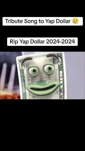

To ja - Yap Dollar (Real)
to moje dane (też real)
Imię: Yap Dollar
Wiek: 69,5
Wzrost: 20,33 kg
Waga: 245nm
Kontakt: 222 333 18
Data urodzenia: 11 września 2001
Info dodatkowe: dużo gada bezsensu
Serię ataków terrorystycznych z 11 września 2001 r. w USA, największych w historii świata, przeprowadziło 19 osób.
Wśród nich było 15 Saudyjczyków, dwóch obywateli jednoczonych Emiratów Arabskich, Libańczyk i Egipcjanin.
Trzech spośród tej czwórki tworzyło komórkę hamburską, która stanowiła trzon całej operacji.
Kierował nią Egipcjanin Muhammad Ata as-Sajjid. Pilotował on samolot Boeing 767 American Airlines, lot nr 11, który pierwszy uderzył w północną wieżę WTC.
Marwan asz-Szihhi był pilotem Boeinga 767 United Airlines, lot nr 175, który rozbił się o południową wieżę WTC.
Hani Handżur zasiadł za sterami samolotu Boeing 757 American Airlines odbywającego lot nr 77. Celem ataku był Pentagon.
Pilotowi czwartego samolotu – Boeinga 757 United Airlines, lot nr 93 – Zijadowi Dżarrahowi nie udało się osiągnąć celu, prawdopodobnie Kapitolu,
ponieważ pasażerowie przystąpili do odbicia samolotu z rąk terrorystów. Maszyna spadła na ziemię w Pensylwanii. W wydarzeniach z 11 września ogółem
zginęło 2996 osób, w tym 19 terrorystów, a 6291 zostało rannych66. Wśród ofiar śmiertelnych było sześcioro Polaków.
W akcji ratunkowej zginęło 343 strażaków. Zamachy wyrządziły olbrzymie straty materialne.
